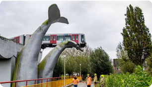

Wist je dat...

er het standbeeld van een walvis-staart een metro ongeluk heeft voorkomen..
Tientallen omwonenden en andere Spijkenissers staan deze maandag rondom de walvisstaarten bij metrostation De Akkers in Spijkenisse.